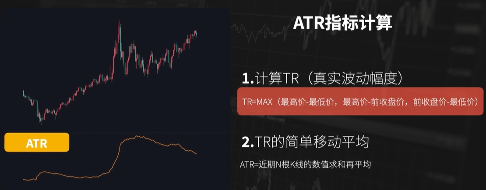

仓位止损ATR指标
指标原理
- ATR又叫做平均真实波动幅度指标，指标非常的简单，只有一个参数，图表的话也只有一根线。
ATR指标的计算第一步是计算真实波动幅度TR，TR的计算要先计算三个数值，分别是当前K线的最高价减去最低价，最高价减去上一根K线的收盘价，上一根K线的收盘价减去最低价，然后取三个数值当中的最大值，就是TR的数值。计算完真实波动幅度TR的数值然后就是计算ATR，ATR就是将最近的N根K线的TR数值求和再平均，就计算得到了当前K线对应的ATR的数值。这就是ATR指标计算的完整的过程，了解了ATR这个指标核心其实在于TR的计算，而TR呢又是却决于三个数值的最大值，那我们就重点来看下这三个数值。

- TR的计算
第一是最高价减去最低价，第二是最高价减去上根K线的收盘价，第三是上根K线的收盘价减去最低价。既然TR是取三个数值中的最大值，那我们就依次来看一下，这三个数值在什么情况下分别会最大。这三个数值的计算分别用到了三个价格，分别是当前K线的最高价，最低价，以及上一根K线的收盘价，那什么时候最高价减去最低价最大呢？那就是当上一根K线的收盘价在当前K线的最高价和最低价之间的时候，也就是说最低价小于等于前一根K线的收盘价。小于等于最高价的时候，那最高价减去最低价计算得到的数值是最大的。那什么时候最高价减去上一根K线的收盘价数值最大呢？一定是上一根K线的收盘价小于当前K线的最低价，这种情况在盘面当中观察，一般都是向上跳空。那什么时候上一根K线的收盘价减去最低价数值最大？那一定是上一根K线的收盘价要大于当前K线的最高价。在盘面当中呢一般对应的就是向下调控。通过找到三个数值对应的走势，那三个数值取最大值就涵盖了所有的相邻K线的情况，取其中的最大值，就计算得到了真实的波动幅度。然后呢再求和平均就得到了ATR的指标。
海龟交易法应用
- 在海龟交易法当中，ATR指标主要有两个方面的应用，第一用来计算开仓的数量，第二用来制定止损和加仓的规则。在海龟交易法则当中，ATR的第一个主要应用是计算开仓数量，在开仓入场的时候有的人习惯用固定的手数，也有很多人是根据自己的资金量以及每一个品种的保证金比例。但是这样的计算开仓的方式会存在一定的问题，一方面保证金有时候会有调整，另外一方面不同的品种每一手的合约价值是不同的。波动的幅度也是不同的，分配同样的资金去交易不同的品种，同样的一笔交易，如果你在合约价值很大的品种上出现了一次亏损，你可能在波动幅度较小的品种上，多比盈利都无法覆盖掉这笔亏损。所以更合适的计算仓位的方式是以损定量，固定每一笔亏损的金额，然后去计算出现交易机会之后的开仓的数量，海龟交易法则当中是利用ATR指标来计算仓位。
- 首先利用ATR的数值来计算价值波动量DV，价值波动量DV就等于ATR的数值乘以合约的每点价值，每一次开仓的止损控制在账户总资金的1%以内，然后用每一笔开仓的止损去除以价值波动量DV，就得到了每一笔的开仓数量。
- 我们举一个例子，比如说看当前的玉米合约，玉米合约一手合约是10吨，1吨的价格是2850，最小的波动是1元，那合约的每一点的价值就是10，假如账户的资金量是30万，我们去计算一下此时此刻去开仓的数量，首先计算波动量DV，用ATR的数值30乘以点值10，得到DV的数值就是300，再计算单笔止损，账户总资金30万乘以1%，得到单笔止损的限额是3000元，最后计算开仓的数量，用单笔止损3000除以波动量DV300得到的开仓数量就是10手。
- 我们再举一个例子，还是以同样的规则，假如交易的品种是采油的合约，菜油的合约一手合约是10吨，一吨的价格是13400，最小的波动是1元，合约每一点的价值是10。ATR的数值是280，按照步骤，我们还是先计算波动量DV，用ATR的数值280乘以点值10得到DV的数值是2800。单笔止损我们刚刚计算过至3000，最后计算开仓的数量，用单笔止损3000除以波动量DV2800，得到开仓的数量约等于1手，用这样的方式计算仓位，一方面只需要通过这样简单的规则就可以针对不同的交易品种，快速的计算出比较合理的开仓的数量，而且不管品种波动的幅度是大是小，合约的价值是大是小。都可以保证每一笔交易亏损的话数额是大致相当的，可以把止损的风险控制在合理的范围内。
- 在海龟交易法中，ATR指标的第二大应用是指定止损和加仓的规则，止损的设置等于建仓的价格减去两倍的ATR，而加仓的规则是盈利的方向，突破了1/2倍的ATR时进行加仓，最多增加4个单位。如果有加仓的情况下，每一次加仓止损的位置提高1/2倍的ATR数值。
为什么用ATR指标作为基础？用来作为止损和加仓的相应规则呢？因为ATR数值能够动态的反应当前标的的真实波动幅度，并且能够轻松的制定出具备适应性的规则。当我们去交易不同的标的的时候，很多人用固定的点数作为止损，不过这样的方式也是会存在一些问题，一方面，一个品种的波动幅度是动态变化的，比如之前玉米的价格是1500，你设置100点的止损，但是现在的价格是3000，你是否还要用100点的幅度作为止损的幅度呢？另一方面，不同的品种之间波动的幅度也是不同的，包括不同的品种合约价值是不一样的，价格是不一样的，价格波动的幅度也是不一样的，在交易不用品种的时候，是不是要针对每一个品种单独的去考虑设置止损的幅度大小呢？如果我们了解了ATR的这个指标，他就是跟随着当前的标的，根据最近的波动幅度动态变化的，我们只需要用一定倍数的ATR作为止损的幅度，用这样一条简单的规则，就可以去适用各个品种。比如海龟交易法则当中用ATR止损的规则，就是用两倍的ATR数值，作为止损的幅度。
- 我们还是用玉米这段走势作为例子，现在的价位是在2850，在这个位置我们去建仓多单，建仓的时候对应的ATR的数值是30，那我的止损就是2850减去2倍的ATR，然后等于2790。
- 同样的如果换成菜油的品种，在13400的价格上去建仓多单，ATR对应的数值就是280，那按照2倍的ATR幅度作为止损，我的止损的位置就等于13400减去2*280得到12840，我们并不需要针对于每一个品种单独的去研究，只需要一条简单的标准，就可以指定出止损的规则，并且可以应用在不同的品种上面。所以说ATR指标是一个适合去构建止损规则的指标。
总结
- 以上就是ATR这个指标相关介绍，理解了这个指标之后，你可以看到，这个指标在构建策略的时候，由于它的计算是根据当前价格走势的波动幅度进行计算，所以可以作为一个很好的标准，不管他去计算开仓的数量还是计算止损的位置，都可以根据当前的品种近期的波动的幅度，计算出一个相对合理的数值。当然用ATR指标作为标准，去作为止损或者计算仓位的规则，也不仅仅是海龟交易法则当中应用的那样，不过了解了这个指标的原理和优势，你可以在此基础之上去形成自己的规则，构建自己的策略，搭建自己的交易系统。